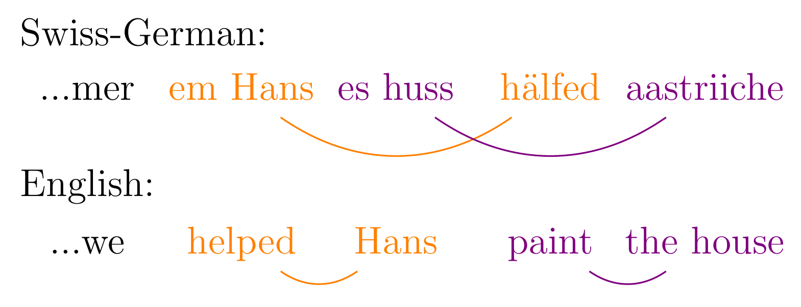
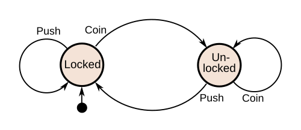

The Chomsky Hierarchy: A Study of Language and Computational Power
Chomsky Hierarchy
The Chomsky Hierarchy was a major step toward answering a question that has been asked for thousands of years: how can we define language in a precise, mathematical way? The key idea is that the complexity of a language is directly linked to the kind of memory required to understand or process it.
To start us off, let's look at an example. The dog that the boy saw chased the cat. Notice how the sentence is nested: each clause fits neatly inside another. To understand it, you only need to remember the most recent piece.
Now consider a Swiss German sentence like ...mer em Hans es Huus hälfed aastriiche. ("We helped Hans paint the house."). Here, the dependencies are not nested but cross-serial: elements earlier in the sentence correspond to multiple elements later. Understanding it requires keeping track of several relationships at once, not just the most recent one.

The main point is that languages differ not just in vocabulary or grammar, but in the type of structure they require you to track over time. Some can be processed with very limited memory, while others require unbounded memory. The Chomsky hierarchy formalizes this by classifying languages according to the computational resources needed to recognize them.
Moving up the hierarchy
Moving up the hierarchy means the language becomes more complex and therefore requires more memory. These classes form a hierarchy of sets: every regular language is context-free, but not every context-free language is regular, just like every integer is a real number, but not every real number is an integer.
We’ll start at the bottom and work our way up.
Type 3 - Regular Languages
A regular language is a set of strings that can be recognized by a machine with a fixed, finite number of states. They’re often described using regular expressions, and can find patterns like “does this contain abc somewhere?” or “is there an even number of 1s?”.
This makes them powerful, but limited. For example, they cannot check whether parentheses are balanced, since that would require remembering how many have been opened.
In short, they can only remember a limited amount of information, no matter how long the input is.

This is a finite state machine (FSM) for a turnstile, the kind you see in train stations or airports. It has two states (locked and unlocked) and reacts to inputs like coin and push. It doesn’t remember anything about the past; it only looks at its current state and input to decide what to do next.
Type 2 - Context-Free Languages
Context-free languages are a step up from regular languages. Instead of having only a fixed, finite amount of memory, they have access to a simple structure called a stack. This allows them to keep track of previously seen information, but only in a very structured way. Because of this, they can handle patterns that regular languages can't. For example, they can check whether parentheses are balanced by “pushing” each opening parenthesis and “popping” it when a closing one appears. However, they are still limited. They cannot compare multiple independent pieces of information at once. In short, they can remember as much as they want, but only in a last-in, first-out way.
// Check if parentheses are balanced using a stack
#include <stdio.h>
int isBalanced(char *str) {
int stack = 0;
for (int i = 0; str[i] != '\0'; i++) {
if (str[i] == '(') {
stack++;
} else if (str[i] == ')') {
stack--;
if (stack < 0) {
return 0;
}
}
}
return stack == 0;
}
Unlike a finite state machine, this program uses a variable that can grow as needed. Each opening parenthesis is “pushed”, and each closing one “pops” it off. This ability to track an unbounded amount of information in a structured way is exactly what makes context-free languages more powerful than regular languages.
This isn’t a true stack, it’s just a counter. Real context-free machines (pushdown automata) use a proper stack that can store symbols, not just a number.
Type 1 - Context-Sensitive Languages
Context-sensitive languages are a step up from context-free languages. Instead of being limited to a stack, they can use memory in a much more flexible way, allowing them to keep track of multiple relationships at once. Because of this, they can handle patterns that context-free languages cannot. For example, they can recognize strings like aⁿbⁿcⁿ, where the number of each symbol must match. This requires comparing multiple counts at once, which a single stack cannot do. This is similar to cross-serial dependencies in natural language, where elements earlier in a sentence correspond to multiple elements later on. In short, they can remember and compare multiple pieces of information at once.
Type 0 - Recursively Enumerable Languages
Recursively enumerable languages are the most general class in the hierarchy. They remove almost all restrictions on how memory can be used. These languages can be recognized by a machine with unlimited memory and the ability to perform arbitrary computations. In fact, this class corresponds exactly to what a general-purpose computer can do. Because of this, they can express extremely complex patterns. For example, a machine can simulate another program and try to determine what it will do. However, this is where things become fundamentally different from the previous levels. Unlike simpler machines, these are not guaranteed to halt. For some inputs, they may run forever without producing an answer. This isn’t just a limitation of our tools, it’s a mathematical fact. Alan Turing showed that there is no general method to determine whether an arbitrary program will eventually stop or run forever. This is known as the halting problem and it is its own can of worms but in short, they can compute anything that is computable, but they don’t always know when to stop.
What does this mean for human language?
At first glance, the Chomsky hierarchy looks like a purely abstract classification. But before us computer nerds invaded it, it was originally motivated by the study of human language. Natural languages like English are often well-modeled by context-free grammars, since they rely heavily on nested structures. However, as we saw earlier, some languages exhibit patterns like cross-serial dependencies, which go beyond what context-free languages can describe. This raises an interesting question: how powerful is human language, really? In practice, human languages seem to sit somewhere between context-free and context-sensitive. They are expressive enough to require more than simple stack-based memory, but still constrained enough to be efficiently processed by the human brain. The Chomsky hierarchy isn't just about machines, well... we're machines too, so I suppose it is, BUT it’s also a way of understanding the limits and structure of human language itself.
Beyond Structure
Here’s something strange: a sentence can be perfectly valid, and still feel completely unreadable. Take this example: "before was was was, was was is". It is grammatically valid under a particular interpretation, but almost impossible to understand at a glance. Or consider a deeply nested sentence: the cat that saw the dog that saw the bird that saw the person that saw the door that saw the spaceship is red This is also valid English. Each clause is nested inside another, just like a context-free structure. But after a few levels, it becomes extremely difficult to follow. What this shows is that human language is not just about what is theoretically possible, it is also constrained by what we can actually process. In theory, context-free grammars allow unlimited nesting. In practice, humans can only handle a small amount before things break down. Our language may be powerful, but our ability to understand it is limited.
That being said, the Chomsky hierarchy tells us how much memory is needed to recognize structure, but human language is about more than structure alone. Meaning, context, and world knowledge all play a role in how we understand sentences. A sentence can be perfectly valid and still be meaningless, or even misleading without the right context. In other words, the hierarchy captures the mechanics of language, but not the full experience of using it. And this is where things get tricky. “Meaning” itself is hard to pin down in a precise, scientific way. We can describe structure formally, but understanding meaning involves interpretation, context, and cognition, things we still don’t fully understand. The human brain is still far better at this than anything we’ve built. It effortlessly handles ambiguity, fills in gaps, and interprets intent. This begins to touch on deeper questions about consciousness and understanding, areas that are still very much open problems. There are parts of language that remain beyond our current ability to fully explain.
What does this mean for programming languages?
At the lowest level, most lexers are built using regular languages. Tokenizing input—recognizing identifiers, numbers, keywords, is exactly the kind of pattern matching that finite state machines are good at. Once tokens are produced, parsing takes over. Most programming languages are designed to be context-free, which means they can be parsed using a stack-based approach. This is why tools like recursive descent parsers and LR parsers work so well, they’re built on the same idea as pushdown automata. This isn’t an accident. Languages are deliberately designed this way so they can be parsed efficiently and predictably.
Things get more interesting when we move beyond syntax. Type checking, variable scoping, and name resolution often require more than context-free power. For example, making sure a variable is declared before it is used, or that two identifiers refer to the same entity, involves tracking relationships across different parts of a program. This pushes us into context-sensitive territory. The grammar itself might be context-free, but the meaning of the program is not.
At the highest level, once a program is running, we are effectively in Type 0 territory. A program can simulate any computation, including other programs. And just like recursively enumerable languages, we run into the same fundamental limitation: we cannot, in general, determine whether a program will halt. The entire structure of modern compilers mirrors the Chomsky hierarchy, from regular lexing, to context-free parsing, to context-sensitive analysis, all the way up to full computation. In practice, a programming language is just the Chomsky Hierarchy, layer by layer.
There’s something beautiful about the fact that something as complex as language can be defined in such a simple hierarchy, don't you think?.
Context-Sensitive Lexers
Most lexers are usually regular but there are exceptions. In early Fortran, spaces are completely insignificant outside of string literals. The lexer can't use whitespace to separate tokens, which is what basically every other language relies on.
This creates a famous ambiguity. Consider:
DO 10 I = 1, 10 SUM = SUM + I
Since Fortran ignored all whitespace, the lexer couldn't tokenize DO as a keyword until it had scanned far enough ahead to find whether a comma or a period appeared, a classic example of its context-sensitive lexer. Though I couldn't find any confirmation, it's a rumor that a bug like this caused Mariner 1 to veered off course and explode. You're probably wondering why it was made like this. The answer is pretty simple. Punch-Cards. Fortran itself is so old that it was designed during that time, and since Punch-Cards were designed around a column layout, just about everything in the language makes sense when you look at it from that perspective. Columns 1-5 on a Fortran Punch-Card were for statement labels(). Column 6 was a continuation character. If someone punched a hole there, it meant the current card was a continuation of a previous one. Columns 7-72 was the actual meat, the code. Column 73-80 were ignored completely, they were used for numbering your cards so if you dropped them it would be easier to put them back in order. Although dropping Punch-Cards was always a sign of having a very bad day. Obviously there wasn't a whole lot of space on a card for the code, so designers wanted to pack as much code together in a space as possible, removing whitespace was just the logical answer to that kind of problem.
That's just one of the interesting features of Fortran, there are plenty more. The Implicit-typing from the first letter of a variable is another interesting one with the famous line. GOD IS REAL UNLESS DECLARED INTEGER
Although if you thought context-sensitive lexers are a thing of the past and relegated to nothing more than campfire horror stories, think again. This kind of lexing pops up all over modern languages. With Pythons indentation being the ultimate modern example. The meaning of a line of Python code changes depending on what's above it. If you're at 4 lines of indentation you're in a block, if you're at 0 you're not.